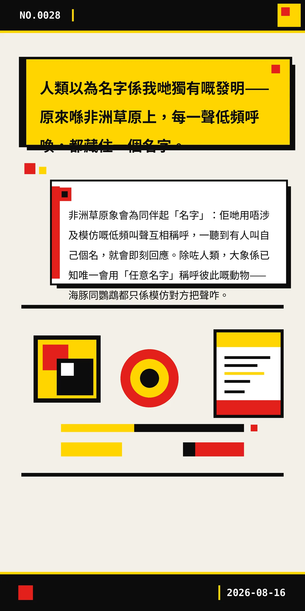

人類以為名字係我哋獨有嘅發明——原來喺非洲草原上，每一聲低頻呼喚，都藏住一個名字。
非洲草原象會為同伴起「名字」：佢哋用唔涉及模仿嘅低頻叫聲互相稱呼，一聽到有人叫自己個名，就會即刻回應。除咗人類，大象係已知唯一會用「任意名字」稱呼彼此嘅動物——海豚同鸚鵡都只係模仿對方把聲咋。
071cc9110f887513
冷知识由执笔的模型自行查证。逐条断言、来源与所引原句存档在纯文字副本里，未经程序逐字校验，留作事后核实。